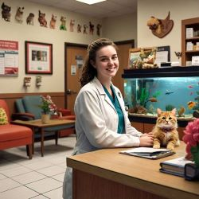
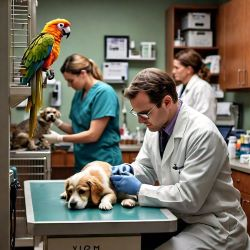
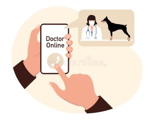

About Us
Welcome to PawsomeAnimalClinic, where your pet's health and well-being are our top priorities. Our clinic has been serving the community with compassion and expertise, providing exceptional veterinary care for pets of all shapes and sizes. Whether you have a playful puppy, a curious cat, or a small exotic pet, our team is dedicated to keeping your beloved companion healthy and happy. We believe that every pet deserves access to quality healthcare, regardless of their owner's financial situation.
Our Mission at PawsomeAnimalClinic is to deliver the highest standard of care for your pets, fostering their health and well-being throughout every stage of life. We believe in a holistic approach that combines cutting-edge veterinary medicine with personalized care, treating each pet as a unique member of our family.
Our team of experienced veterinarians, skilled technicians, and caring support staff are passionate about animals and committed to providing the best possible care. With a wealth of knowledge and a deep love for animals, our team is here to support you and your pet every step of the way.
Our Staff
Dr. Adam Singh - (Our doctor with veterinary experience of 11 years)
Dr. Micah Nest - (Our doctor with veterinary experience of 7 years)
Mr Lionel Peters - (Our veterinary technician with experience of 9 years)
Mrs Layla Naidoo - (Our receptionist with administrative support experience of 3 years)
Each member of our team brings a unique set of skills and a shared commitment to excellence in veterinary care.
We offer a comprehensive range of veterinary services to meet the needs of your pets.


Services Offered:
Wellness Exams & Vaccinations
Regular check-ups and preventative care to keep your pet in peak health.
Dental Care: From cleanings to advanced dental procedures, we help maintain your pet's oral health.
Surgery: State-of-the-art surgical care for routine and advanced procedures.
Emergency Care: Immediate, expert care for when your pet needs it most.
Nutrition & Diet Counseling: Tailored advice to ensure your pet’s dietary needs are met.
We also provide specialized care for exotic pets, including birds, reptiles, and small mammals, ensuring that all members of your family receive the attention they deserve.
Why Choose Us?
Choosing PawsomeAnimalClinic means choosing a veterinary clinic that values your pet as much as you do. Our compassionate approach, combined with our expertise, ensures that your pet receives the best care in a warm and welcoming environment. We are committed to making every visit a positive experience for both you and your pet.
Get in Touch
We invite you to visit our clinic, meet our team, and experience the Pawsome difference. Whether you're a first-time pet owner or a seasoned caregiver, we are here to support you with expert advice, top-notch care, and a genuine love for animals.
At PawsomeAnimalClinic, your pet's health is our passion. We look forward to being your trusted partner in their care. Visit our Contact page for more information on getting in touch with us!!!
